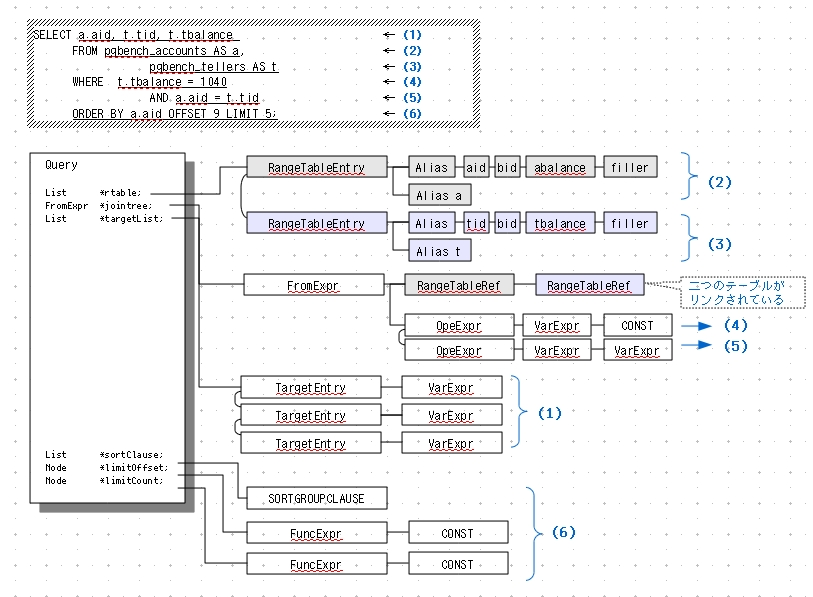
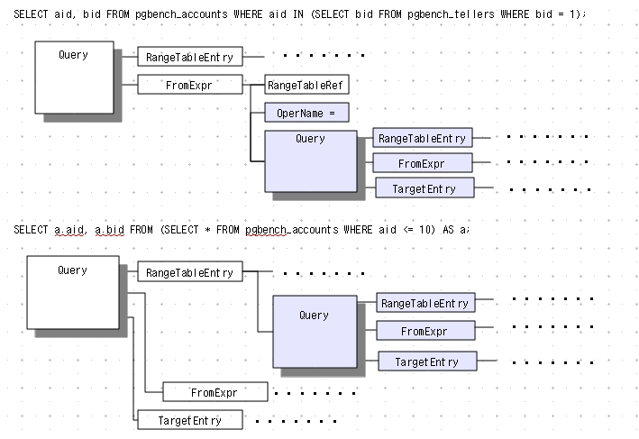
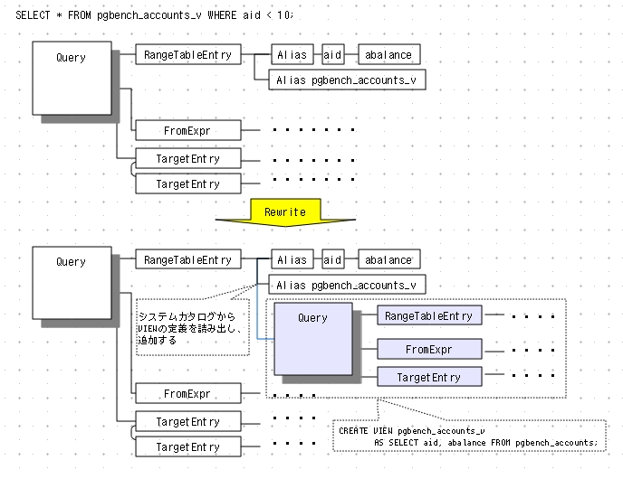

SQLの実行
受け取ったSQLをpostgresプロセスがどのように処理するか、概略を示します。
プラン処理については[<2-04>]で詳細に解説します。
処理の流れ
SQLの処理フローを示します[<図2-06>]。
以下、各処理について簡単に説明します。
[1]パース処理
クライアントから送られたSQL文の構文解析を行い「パースツリー」をつくります。この段階で構文エラーを検出します。
テーブル名やカラム名が実在するか否かは問わないので「ローパースツリー(raw parse tree)」とも呼ばれます。
[2]アナライズ処理
パースツリーをもとに、テーブル名をOIDに変換するなどして「問い合わせツリー(query tree)」をつくります。
テーブル名はシステムカタログpg_class、型名はpg_operatorなど、適宜システムカタログを検索します([<脚注4>])。
また、例えば"SELECT * FROM tbl"のように"*"を使った場合には、実際のテーブルの列名で"SELECT col1,col2,... FROM tbl"のように置き換えます。
| 脚注4 |
システムカタログの情報は非常に頻繁にアクセスするので、各postgresプロセスがローカルコピー(カタログキャッシュ)を保存しています。
|
より詳細に解説する。
アナライズ処理はローパースツリーを基に以下のことを行う。
- システムカタログを検索してテーブル名や型などをOIDに変換
例えばテーブル名はシステムカタログpg_class、型名はpg_operatorなど、適宜検索する。
- 列名リストの補完
例えば"SELECT * FROM tbl"のように"*"を使った場合、実際のテーブルの列名で"SELECT col1,col2,... FROM tbl"のように置き換える。
これらを経て、クエリツリーを作成する。
なお、クエリツリーは以下の設定パラメータによってログに表示できる。
debug_print_parse = on # パースツリーの表示
debug_print_rewritten = on # リライト後のパースツリーの表示
debug_print_plan = on # 実行プランの表示
debug_pretty_print = on
実際のSQL文のクエリツリーを示す。
まず、次のSELECT文のクエリツリーを図示する。
SELECT a.aid, t.tid, t.tbalance
FROM pgbench_accounts AS a,
pgbench_tellers AS t
WHERE t.tbalance = 1040
AND a.aid = t.tid
ORDER BY a.aid OFFSET 9 LIMIT 5;
ログが表示するクエリツリーは文字列なので、ここでは見やすいように図形に直している。

完結した一つのSQL文は構造体Queryを根とするクエリツリーを作る。
ここで構造体QueryにはそのSQL文に関るすべての情報が保持される。
構造体Queryはsrc/include/nodes/parsenodes.hで定義されている。
以下、構造体Queryが保持する要素のうち、重要なものを説明する。
[1] RangeTableEntry RTE
参照情報レンジテーブルエントリ(RTE)には以下のいずれかの情報が入る。
これはバージョンによって異なる。以下はバージョン9.1のものである。
(1)RTE_RELATION 通常のリレーション。テーブル名とカラム名や別名など
(2)RTE_SUBQUERY FROM句の副問い合わせ
(3)RTE_JOIN 結合タイプやレンジテーブル内のリレーションの位置とカラム位置を持つVarノードのリストなど
(4)RTE_FUNCTION FROM句の関数
(5)RTE_VALUES 値
(6)RTE_CTE common table expr (with list element) :
rtekind=RTE_RELARIONならば、通常のテーブル、インデックス、シーケンス、ビュー、複合型、TOASTテーブル、外部テーブルのいづれかである。単純なSELECT文の場合はテーブル名とカラム名や別名、およびそれらに関わる各種情報から成る。
テーブル結合している場合は、各テーブル毎にリストが作成される。
２つのテーブルに関する情報はRangeTableEntryにリストとして連結して保持する。
上図の(2)にあたる部分がテーブルpgbench_accounts、(3)の部分がpgbench_tellersの情報を保持している。
なお、このSELECT文はテーブルに別名(alias)を定義しているので、それらの情報も保持する。
また、JOIN TREE部には２つのテーブルへの参照が連結され、
WHERE句の２つの条件句も連結されている。
RTEの定義はsrc/include/nodes/parsenodes.hの構造体RangeTblEntryで定義されている。
[2] TargetList
ターゲットリストは、問い合わせ結果の定義情報TargetEntryノードから成る。
SQL文によって内容が異なる。具体的には次のとおり。
SELECT :SELECT句で表示するカラムのデータ
INSERT :VALUES()句に設定された挿入するデータ
UPDATE :SET col=val,... など、SET句に設定された更新データ
DELETE : なし
例えば、先のSELECT文は"aaid, t.tid, t.tbalance"の3つの項目を表示するので、
上図(1)の部分であるターゲットリストには、3つのターゲットエントリが含まれる。
構造体TargetEntryはsrc/include/nodes/primnodes.hで定義されている。
ソースコードで構造体の定義が改善されたため、
IK15-parser2_060330.pdf
は多少読み替えしなければならない。具体的にはResdomという構造体は廃止され、TargetEntryに統合された。
resnoフィールドは、SELECT文では結果の並び順を示す。
INSERT文とUPDATE文ではテーブル内のカラムの位置を示す。
[3]JoinTree
JoinTreeはSELECT文のみで、FROM句とWHERE句の検索条件を記録するノードから成る。
上図の(4)と(5)に当る部分である。
[4]その他
ORDER BY句、OFFSET句、LIMIT句などはそれぞれ構造体Queryに直接保存される。
上図の(6)に当る部分である。
次に、２つのサブクエリのパースツリーを図示する。
SELECT aid, bid FROM pgbench_accounts WHERE aid IN (SELECT bid FROM pgbench_tellers WHERE bid = 1);
SELECT a.aid, a.bid FROM (SELECT * FROM pgbench_accounts WHERE aid <= 10) AS a;

上のサブクエリはFROM句部分にSELECT文があるので、
親のquery構造体のRangeTableEntry部分に入れ子になったSELECT文のquery構造体が連結された形になる。
下のサブクエリは入れ子のSELECT文がWHERE句にあるので、
親のquery構造体のJoin Tree(FromExpr)部分に入れ子のSELECT文のquery構造体が連結される。
サブクエリがFROM句にあるが、FromExprに連結されるわけではない。名称に惑わされないように。
このように、例え何重の入れ子になったサブクエリであっても、その都度query構造体が定義され、クエリツリーが定義できる。
[3]書き換え処理
定義されたルールをもとに問い合わせツリーを書き換えます
書き換え(Rewrite)処理は更新系と検索系で多少処理が異なりますが、
大まかにいえば「生成した問い合わせツリーを、ルールに従って(システムカタログに保存されている)問い合わせツリーで置き換え」る処理です。
PostgreSQLはトリガによく似た"ルールの適用"という機能があります。これは内部で書き換え処理を利用しています。VIEWの実装も書き換え処理を利用しています([<コラム2-1>])。
| コラム2-1:VIEWによるSELECT文の書き換え |
例として、VIEWによるSELECT文の書き換えを示します。
次のVIEWが定義されているとします。この定義のSELECT文の問い合わせツリーはシステムカタログが保存しています。
CREATE VIEW pgbench_accounts_v AS SELECT aid, abalance FROM pgbench_accounts;
本来は問い合わせツリーが書き換えられるのですが、ここでは擬似的な表現として、
SELECT文の書き換えによるビューの実現方法を示します。
[書き換え前] SELECT * FROM pgbench_accounts_v WHERE aid < 10;
↓ 書き換え
[書き換え後] SELECT * FROM (SELECT aid, abalance FROM pgbench_accounts) AS a WHERE a.aid < 10;
|
例として、VIEWによるSELECT文のクエリツリーの書き換えをみる。
次のVIEWが定義されているとする。この定義のSELECT文のクエリツリーはシステムカタログに保存されている。
CREATE VIEW pgbench_accounts_v AS SELECT aid, abalance FROM pgbench_accounts;
SELECT * FROM pgbench_accounts_v WHERE aid < 10;

[4]プラン処理
プランナは最も効率的な問い合わせプラン(query plan)を求めます。
問い合わせプランとは、問い合わせを実行するときにどの方式でテーブルを検索するか、複数のテーブルがある場合はどの順序、どのテーブル結合方式で検索するかを記述したものです。
PostgreSQLのプランナはコストベースで、問い合わせプランの優劣はコストで評価します。
問い合わせプランの求め方、およびそれぞれのコストの算出方法は[<2-04>]で詳細に解説します。
なお、PostgreSQLは複雑な問い合わせ(デフォルトではテーブルを11以上含む場合) に対して「遺伝的アルゴリズムによる問い合わせ最適化」([<コラム2-2>])を用います。
| コラム2-2:遺伝的アルゴリズムによる問い合わせ最適化 |
「遺伝的アルゴリズムによる問い合わせ最適化」はPostgreSQLの特徴のひとつで、
University of Mining and Technology のInstitute of Automatic Control(ドイツ、フライブルグ)で実装されました。
遺伝的アルゴリズムは組合せ最適化問題に対するヒューリスティックな解法のひとつで、最良ではないが良好な答えを高速に見つけ出す手法です。
通常、プランナは問い合わせプランを選ぶために、問い合わせ文に含まれるリレーションの評価順序とテーブル結合方式について、ほぼすべての組合せのコストを計算します。よってコスト計算時間はSQL文のテーブル数や条件式の数によって指数的に増え、ある程度以上複雑な問い合わせの最適化は不可能です。
そこで、遺伝的アルゴリズムによって最適ではないが良好な問い合わせプランを求めます。
問題の定式化(モデル化)は巡回セールスマン問題をベースにしています。
|
[5]エグゼキュート処理
プランナの求めた問い合わせプランに沿って問い合わせを実行します。
参考文献
- パースとアナライズ処理 石井達夫氏
http://www2b.biglobe.ne.jp/~caco/webdb-pdfs/vol27.pdf
- リライト処理 石井達夫氏
http://www2b.biglobe.ne.jp/~caco/webdb-pdfs/vol28.pdf
- プラン処理(1) 石井達夫氏
http://www2b.biglobe.ne.jp/~caco/webdb-pdfs/vol29.pdf
- プラン処理(2) 石井達夫氏
http://www2b.biglobe.ne.jp/~caco/webdb-pdfs/vol30.pdf
- エクゼキュート処理 石井達夫氏
http://www2b.biglobe.ne.jp/~caco/webdb-pdfs/vol31.pdf
本書が省略した多くの事柄について、詳細な解説があります。
Last-modified: 2018-9-8